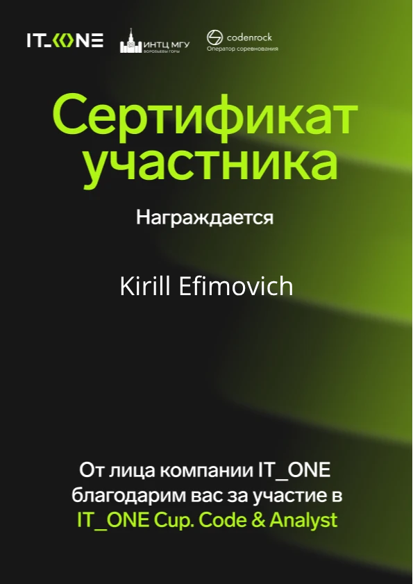
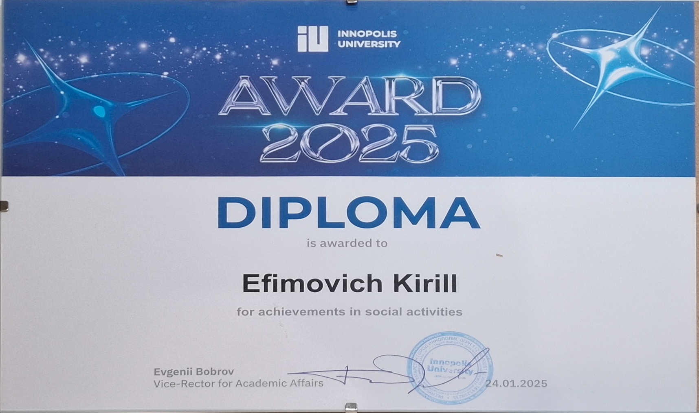
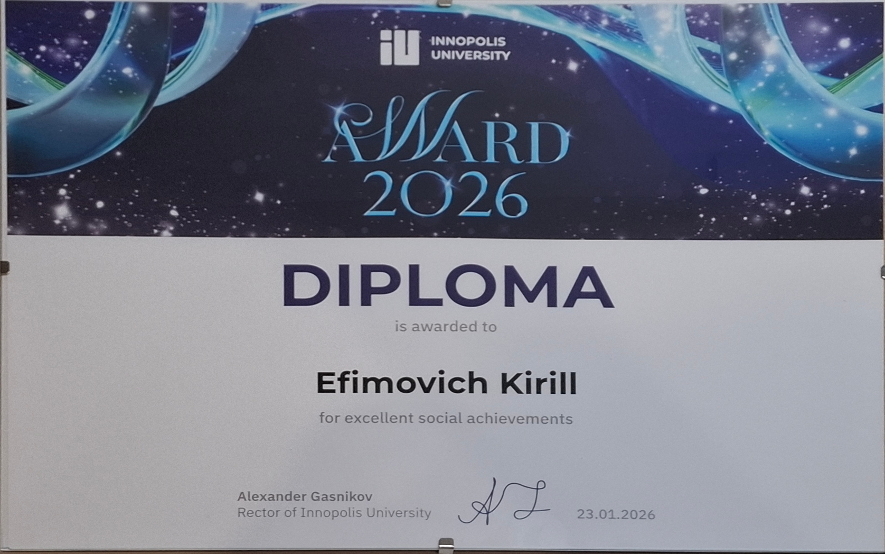

Leadership & coordination
I coordinate technical work on student and hackathon projects in teams of five to seven people: priorities, task alignment, and keeping delivery on schedule.

Junior DevOps Engineer
+7 (916) 744-12-80DevOps engineer with 2+ years of experience in CI/CD automation, container deployments, and monitoring of web and server systems. Full-time DevOps intern at VK, working with Docker, GitLab CI/CD, Kubernetes, Kotlin DSL, and the Prometheus, Loki, and Grafana stack. I have led technical coordination for teams of 5–7 people, built CI/CD pipelines, and kept self-hosted runners and Docker-based infrastructure running for academic projects and hackathons. I learn new technologies quickly, focus on reliable automated solutions, and am interested in integrating AI into my services.

2nd place

Finalist, DevOps track

Winner in the "Best Solution" category

Certificate of participation

Outstanding social impact · 2025

Outstanding social impact · 2026
I coordinate technical work on student and hackathon projects in teams of five to seven people: priorities, task alignment, and keeping delivery on schedule.
I take part in code review and task discussions. When needed, I help redistribute work so the team meets its deadlines.
I present results clearly in writing and in person, with minimal jargon. I flag risks and open questions early.
I divide work into stages and agree on dates. If plans change, I inform the team promptly so we can adjust.
I treat CI/CD, runners, and releases seriously: reproducible steps and short documentation for colleagues.
I learn new technologies and processes quickly through documentation, targeted questions, and validation on small tasks before scaling up.
Languages: Russian (native), English (B2+).
Limited scholarship from Innopolis alumni: 1519.innopolis.university.
I work as a full-time DevOps intern at VK (https://en.wikipedia.org/wiki/VK_(service)) on shipping and operating web and server-side systems. The aim is to create CDaaS platforms which will keep releases repeatable and environments observable so incidents are easier to trace. For my tech stack: I use Docker, GitLab CI/CD, Kubernetes, Kotlin DSL for pipelines, and Prometheus, Loki, and Grafana for monitoring and logs. I maintain CI/CD flows, help with container and cluster configuration, and support observability.
A real-time collaborative document platform. I shaped the idea, product logic, and MVP scope, coordinated the team, and contributed to the frontend (React, TypeScript, Mantine, BlockNote, Yjs). The stack also includes backend and realtime services in the monorepo.
Repository: github.com/motor-screwdriver/mts-true-tech-hack-26
A web application for planning scientific walking routes in Innopolis. The service combines an interactive map, points of interest, OSRM routing, and several user scenarios: guided lectures, custom routes, and length-based route generation.
Repository: github.com/quintet-sdr/hackathon-cpst
Site: volgatrail-innopolis.vercel.app
Hackathon project: catch risky transactions early - each payment event is ingested, evaluated by a rules engine (with ML where it helps), and suspicious cases are flagged with traceable decisions and metrics. I built the whole thing solo, from the Spring services and data pipeline to Docker and observability.
Repository: github.com/lanebo1/ITONE
Educational compiler for the imperative Language I with WebAssembly Text generation. Developed parts of the compiler pipeline: AST, parser, semantic analysis, code generation, and test scenarios.
Repository: github.com/LuminiteTime/Compilers-Construction-Hmm
Designed the microservice architecture for a knowledge sharing platform. Led the technical and organizational parts of the project in a 7-person team, organized the development process, and implemented a Blue-Green Deployment strategy.
Repository: github.com/IU-Capstone-Project-2025/open-labs-share
Framework for analyzing logs from distributed server systems. Containerized services, configured NGINX reverse proxy and RabbitMQ pipelines, MongoDB, and automated deployment to a local server via self-hosted GitHub Actions; coordinated the team.
Repository: github.com/Linch-JG/Distributed-Log-Analysis-Framework
Website for the Innopolis University Department of Education for automatically assigning students to selected electives. Developed REST API endpoints, coordinated a 5-person team, organized the code review process, and set up a CI/CD pipeline for automated testing and deployment.
Repository: github.com/quintet-sdr/elect-gen-backend
Website-constructor for building country houses construction. Developed REST API with 25+ endpoints, conducted testing through Swagger/Postman, connected database.
Cross-platform Flutter application working with an external API. Developed the application architecture, introduced tests and CI checks, deployed builds as artifacts, and led the team.
Repository: github.com/Linch-mini/DishDash
Built and manage home server infrastructure using Docker containers. Deployed various services including web applications, databases, and monitoring tools with automated deployment pipelines.
Several university projects spanning backend and REST APIs, Flutter mobile work, and coursework in systems- and application-level languages.